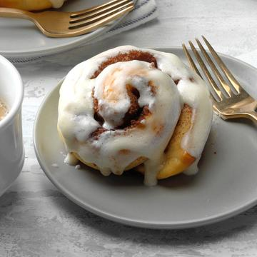

Quick Cinnamon Rolls

Quick and easy cinnamon rolls from scratch, with no yeast, proofing, or kneading necessary!
Nutritional Facts
Per Serving: 223 calories; protein 2.7g; carbohydrates 31.6g; fat 9.9g; cholesterol 36.7mg; sodium 262.1mg
Ingredients
Original recipe yields 18 servings
¼ cup butter, divided (Optional)
Dough
- 2 cups all-purpose flour
- 2 tablespoons white sugar
- 2 teaspoons baking powder
- 1 teaspoon salt
- 3 tablespoons butter, softened (Optional)
- ¾ cup milk
- 1 egg
Filling
- ½ cup white sugar
- ½ cup brown sugar
- 1 tablespoon ground cinnamon
Cream Cheese Frosting:
- 1 cup confectioners' sugar (Optional)
- 4 ounces cream cheese, softened (Optional)
- ¼ cup butter, softened (Optional)
- ½ teaspoon vanilla extract (Optional)
Directions
- Preheat oven to 400 degrees F (200 degrees C). Brush a 9-inch square baking
dish with 2 tablespoons melted butter.
- Whisk flour, 2 tablespoons white sugar, baking powder, and salt together
in a large bowl. Work 3 tablespoons softened butter into flour mixture using your hands.
Beat milk and egg together in another bowl; pour into flour-butter mixture and
stir with a rubber spatula until a soft dough forms.
- Turn dough out onto a floured work surface and roll dough into a 1/4-inch thick rectangle.
Brush surface of dough with 2 tablespoons melted butter.
- Whisk 1/2 cup white sugar, brown sugar, and cinnamon together in a small bowl.
Sprinkle 1/2 of the cinnamon sugar mixture in the bottom of the prepared baking dish.
Sprinkle remaining cinnamon sugar over butter-brushed dough. Roll dough around filling to form a log;
cut log into 18 rolls and place rolls in the prepared baking dish
- Bake in the preheated oven until rolls are set, 20 to 25 minutes.
- Beat confectioners' sugar, cream cheese, 1/4 cup softened butter,
and vanilla extract together in a bowl until frosting is smooth.
Top hot cinnamon rolls with cream cheese frosting.